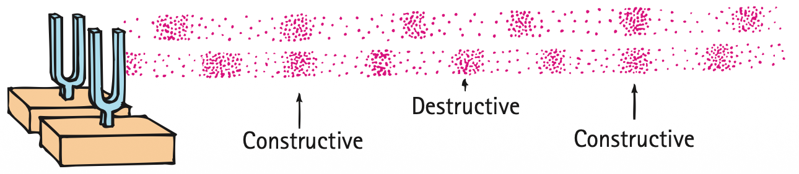

Interference
20.7 Interference
Sound waves, like any waves, can be made to exhibit interference. Recall that wave interference was discussed in Chapter 19. A comparison of interference for transverse waves and longitudinal waves is shown in Figure 20.17. In either case, when the crests of one wave overlap the crests of another wave, increased amplitude results. Or, when the crest of one wave overlaps the trough of another wave, decreased amplitude results. In the case of sound, the crest of a wave corresponds to a compression and the trough of a wave corresponds to a rarefaction. Interference occurs for all waves, both transverse and longitudinal.

An interesting case of sound interference is illustrated in Figure 20.18. If you are an equal distance from two sound speakers that emit identical tones of fixed frequency, the sound is louder because the effects of the two speakers add. The compressions and rarefactions of the tones arrive in step, or in phase. However, if you or a speaker moves to the side so that the paths from the speakers to you differ by half a wavelength, then the rarefactions from one speaker are filled in by the compressions from the other speaker. This is destructive interference. It is just as if the crest of one water wave exactly filled in the trough of another water wave, canceling both. If the region is devoid of any reflecting surfaces, little or no sound will be heard!

If the speakers emit a whole range of sounds with different frequencies, only some waves destructively interfere for a given difference in path lengths. So interference of this type is usually not a problem, because there is usually enough reflection of sound to fill in the canceled spots. Nevertheless, “dead spots” are sometimes evident in poorly designed theaters or music halls, where sound waves reflect off walls and interfere with nonreflected waves to produce zones of low amplitude. When you move your head a few centimeters in either direction, you may hear a noticeable difference.
Sound interference is dramatically illustrated when monaural sound is played by stereo speakers that are out of phase. Speakers are out of phase when the input wires to one speaker are interchanged (positive and negative wire inputs reversed). For a monaural signal, this means that when one speaker is sending a compression of sound, the other is sending a rarefaction. The sound produced is not as full and not as loud as from speakers properly connected in phase because the longer waves are being canceled by interference. This is illustrated in Figure 20.19. Shorter waves are canceled as the speakers are brought closer together, and when the pair of speakers is brought face to face against each other, very little sound is heard! Only the sound waves that have the highest frequencies survive cancellation. You must try this to appreciate it.

Destructive sound interference is a useful property in antinoise technology. Such noisy devices as jackhammers are being equipped with microphones that send the sound of the device to electronic microchips that create mirror-image wave patterns of the sound signals. For the jackhammer, this mirror-image sound signal is fed to earphones worn by the operator. Sound compressions (or rarefactions) from the hammer are canceled by mirror-image rarefactions (or compressions) in the earphones. The combination of signals cancels the jackhammer noise. Noise-canceling earphones are already common for pilots (as worn by Ken, pictured at the beginning of this chapter). The cabins of some airplanes are now quieted with antinoise technology. When they’re not, you should wear your noise-canceling earphones.

Beats
20.8 Beats
When two tones of slightly different frequency are sounded together, a fluctuation in the loudness of the combined sounds is heard; the sound is loud, then faint, then loud, then faint, and so on. This periodic variation in the loudness of sound is called beats and is due to interference. Strike two slightly mismatched tuning forks and, because one fork vibrates at a different frequency than the other, the vibrations of the forks will be momentarily in step, then out of step, then in again, and so on. When the combined waves reach our ears in step—say, when a compression from one fork overlaps a compression from the other—the sound is a maximum. A moment later, when the forks are out of step, a compression from one fork is met with a rarefaction from the other, resulting in a minimum. The sound that reaches our ears throbs between maximum and minimum loudness and produces a tremolo effect.

We can understand beats by considering a tall rabbit and short rabbit hopping side by side. The short rabbit covers less ground in each hop, so it has to hop more rapidly—that is, with a higher frequency—to keep up with the tall rabbit. If the rabbits are “in sync” at a particular moment, landing together, then a little later they will be “out of sync,” landing at slightly different times. How long until they are back in sync? Imagine that the tall rabbit makes 70 hops in 1 minute, and the shorter rabbit makes 72 hops in the same time. After 6 seconds (0.1 min) they will have made 7.0 and 7.2 hops, respectively, and will not be in sync. Not until 30 seconds (0.5 min) have gone by, when they have made, respectively, 35 and 36 hops (an integral number for both), will they again land together. Then, after 1 min (70 and 72 hops), they will again be back in sync. And so on. Twice per minute the rabbits will be in sync. In general, if two creatures with different hopping rates travel together, the number of times they are in sync each minute (or other unit of time) will be equal to the difference in the frequencies of their hops. This idea applies also to the pair of tuning forks. If one fork undergoes 264 vibrations each second and the other fork vibrates 262 times per second, then they will vibrate in sync and reinforce each other twice each second. A beat frequency of 2 hertz will be heard. (The overall tone will correspond to the average frequency, 263 hertz.)
Figure 20.22 was omitted because no matching captured image was supplied.
If we overlap two combs with different teeth spacing, we’ll see a moiré pattern that is related to beats (Figure 20.22). The number of beats per length will equal the difference in the number of teeth per length for the two combs.
Beats can occur with any kind of wave and provide a practical way to compare frequencies. To tune a piano, for example, a piano tuner listens for beats produced between a standard frequency and the frequency of a particular string on the piano. When the frequencies are identical, the beats disappear. Beats can help you tune a variety of musical instruments. Simply listen for beats between the tone of your instrument and a standard tone produced by a piano or some other instrument.
Beats are utilized by dolphins in surveying the motions of things around them. When a dolphin sends out sound signals, beats may be produced when the echoes the dolphin receives interfere with the sounds it sends. When there is no relative motion between the dolphin and the object returning the sound, the sending and receiving frequencies are the same and no beats occur. But when there is relative motion, the echo has a different frequency due to the Doppler effect, and beats are produced when the echo and the emitted sound combine. The same principle is applied by the radar guns used by police officers. The beats between the signal that is sent and the one that is reflected are used to determine the speed of a car.
An intriguing and life-saving application of beats is used in the detection of dangerous gases in mines. The air in some mines contains poisonous methane. There’s a slight difference in the speeds of sound in pure air and in air that contains methane. When a pair of small identical pipes are blown together, one by pure air from a reservoir and the other by the air in the mine, beats are heard if the air contains methane. If you work in a mine, do so in one where beats are not heard when this procedure is done!
Textbook Sections: 20.7, 20.8
Learning Target: Students will analyze sound interference and beats using wave superposition and frequency differences.
- I can explain how two sound waves can combine constructively or destructively.
- I can describe how noise-canceling headphones use destructive interference.
- I can explain beats as alternating loud and soft sound caused by close frequencies.
- I can use beat frequency to compare two sound sources.
- I can critique explanations of sound interference using wave vocabulary.